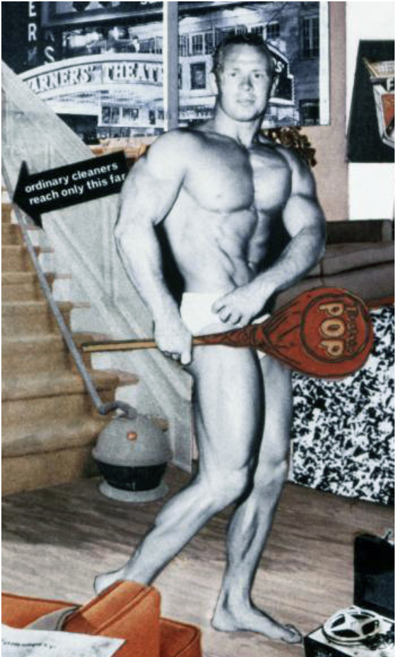
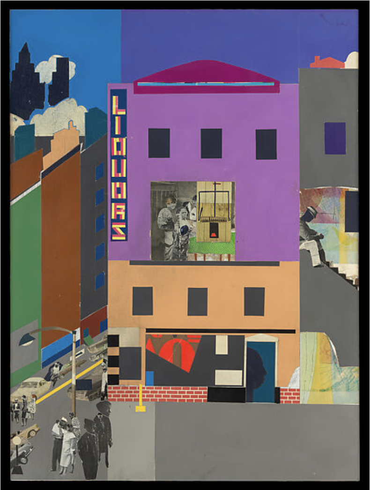

02 / ORIGIN
A history of collage
Collage became an important modern art technique in the early twentieth
century. Artists associated with Cubism, including Pablo Picasso and
Georges Braque, brought pieces of everyday printed material into
artworks. Dada artists later used photomontage—assembling photographic
fragments—to make surprising and often critical images about politics,
media, and society.
In the 1950s, artists connected to Pop Art used familiar images from
advertising, magazines, and consumer culture. Today, collage and splicing
continue in zines, posters, music artwork, digital graphics, and
independent publishing. The tools may change, but collecting, cutting,
layering, and recombining remain central to the process.
03 / IN USE
Artists who recombined images
These examples connect to real online articles and project pages. Look
at the linked pages and add any image credits required by the source
you use for each image.
EXAMPLE 01
Hannah Höch

Höch combines photographic fragments and printed text into crowded
compositions. Abrupt changes in scale and subject make the image
feel energetic and unsettled. Notice how removing people and objects
from their original settings changes how we read them.
View the Cut / Copy / Paste project
Image credit: add the original artist, collection, and image source here.
EXAMPLE 02
Richard Hamilton

Hamilton builds an imagined interior from magazine images and
advertisements. Everyday products become part of the artwork.
Notice how the objects compete for attention and how the collage
comments on advertising and consumer culture.
Read the Smarthistory article
Image credit: add the original artist, collection, and image source here.
EXAMPLE 03
Romare Bearden

Bearden layers and joins images to show many moments of neighborhood
life within one scene. Different spaces, people, and viewpoints sit
together. Notice how the fragments create a sense of place and
community.
Explore the Metropolitan Museum exhibition page
Image credit: add the original artist, collection, and image source here.
04 / SHOW, DON'T TELL
Cut it up. Rearrange it.
This CSS-made composition demonstrates overlapping fragments, rotated
paper pieces, and contrasting type. Replace the sample words or add
your own credited image fragments to develop the visual experiment.
FOUND
OBJECTS
NEW
MEANING
CUT / LAYER / REPEAT
Original HTML/CSS demonstration. Credit any outside images you add to this composition.